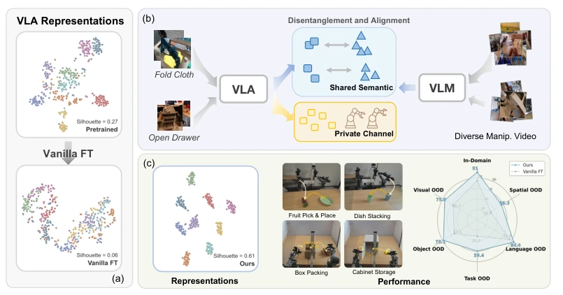
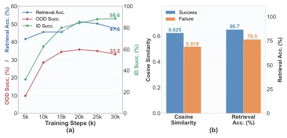
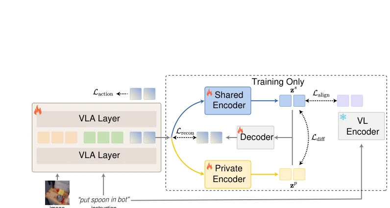
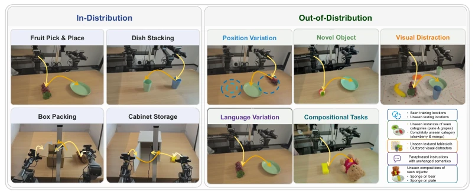
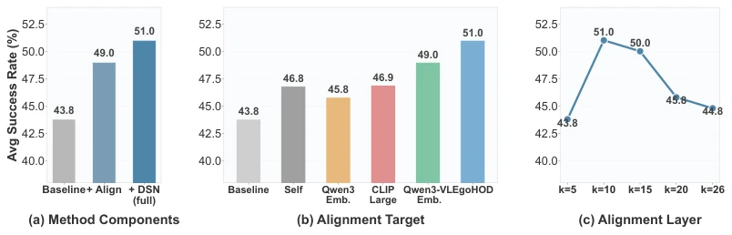
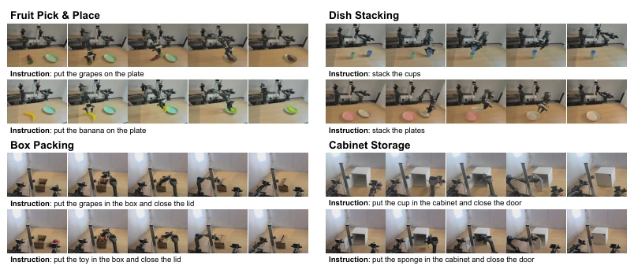
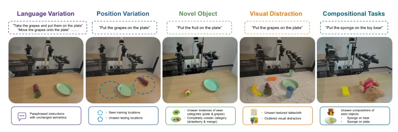

This paper keenly identifies the "semantic collapse" phenomenon in VLA fine-tuning, akin to performing brain surgery but cutting off the memory region. The authors confirm via probe experiments that pure action supervision causes the model to lose the intent understanding capability brought by pre-training, leading to degraded generalization. Methodologically, they implemented a "shared-private" channel separation, aligning intent to an external semantic manifold, and it can be one-click unloaded during inference, which is clever and does not increase deployment burden. However, there are also several critiques: it relies on the quality of external frozen encoders (e.g., EgoHOD); if the reference frame itself is not good, the anchor is skewed; moreover, it is only used during the fine-tuning stage, the pre-training stage remains the same, treating symptoms rather than the root cause. Additionally, the performance ceiling is limited by the quality of the alignment target; if pre-training data is not sufficient, the effect may be diminished. Overall, it is a good "patch", but do not expect it to replace better pre-training data; it belongs to "clever force" rather than "brute force".
The core problem is that when VLA models are fine-tuned on limited robot demonstration data, they destroy the rich semantic structure inherited from the pre-trained VLM [1]. Existing work either blindly expands data [8] or changes architecture [11], but no one is clear about what exactly is lost. Studies show that action supervision drives models to take shortcuts (shortcut learning) [5], leading to the collapse of intent-level semantic structure, directly weakening OOD generalization ability [7]. Although mirror neuron theory suggests observation and execution share encoding [13], the robotics field lacks quantitative metrics for action representation quality. This paper aims to answer "what is a good action representation", and through probes finds that semantic alignment and generalization performance decline in tandem during the fine-tuning process, urgently needing a method that can repair structure without interfering with action prediction.

Figure 1: Semantic anchoring for robotic action representations. (a) Vanilla action-only fine- tuning destroys the semantic structure inherited from pretraining: t-SNE of π0’s layer-10 features on LIBERO-Goal [1], colored by task. (b) Our plug-and-play method anchors action representations to a semantic manifold via contrastive alignment with shared/private decomposition. (c) Repaired representations recover semantic structure and consistently improve both in-distribution and OOD performance on a real bimanual platform.

Figure 2: Alignment probing results on LIBERO [1]. (a) Action–instruction alignment (retrieval accuracy), ID success, and OOD success tracked over the π0 fine-tuning trajectory. OOD success synchronizes with alignment, while ID success rises monotonically. (b) Per-trajectory cosine similarity and retrieval accuracy at step 30k, separated by rollout outcome; both metrics are systematically higher for successful rollouts.
The overall process involves inserting an alignment module during VLA fine-tuning, completely discarding it during inference. First, extract action token hidden states from middle layers of the backbone network (e.g., layer 10). The innovation lies in "Shared-Private Decomposition": using two MLPs to split features into a shared channel encoding intent and a private channel retaining physical details. After attention pooling, the shared channel is contrastively aligned with instruction embeddings of a frozen VLM text encoder (e.g., EgoHOD) (InfoNCE Loss), forcing intent semantic alignment; the private channel retains execution details. Simultaneously add reconstruction loss and angular decorrelation loss to prevent channel entanglement. The final total loss includes action loss and alignment terms; all auxiliary modules are removed at deployment, ensuring the inference graph is consistent with the baseline, achieving zero-cost deployment. Additionally, this method decouples semantic and action gradients, avoiding gradient conflicts where semantic alignment interferes with action prediction, enabling the model to both understand "what to do" and precisely control "how to do", significantly improving representation quality while maintaining inference efficiency.

Figure 3: Method overview. A pretrained VLA maps visual observations and language instructions to actions. At a mid-network layer, we decompose each action-token representation into a shared component that encodes intention-level semantics and a private component that preserves execution- specific detail. The shared components are attention-pooled and contrastively aligned to the instruction embedding from a frozen encoder. All modules inside the dashed box are discarded at inference, leaving the deployed model unchanged. 3 Method
Validated on LIBERO [1], SimplerEnv [29], and real dual-arm robot platforms. Baselines include π0 [4], SpatialVLA [11], and ACT [33], Diffusion Policy [34]. The metric is task success rate. Results show the method improves ID tasks by 18.7%, OOD generalization by 21.5%, especially with obvious advantages on unseen object and position combinations. Ablation studies show that contrastive alignment and decomposition modules are both effective, and external visual grounding encoders (e.g., EgoHOD) outperform pure text or static image encoders. Selecting the alignment layer at the middle layer (k=10) yields the best effect, confirming that middle-layer representations are the most semantic. Real robot experiments further confirm its robustness in complex multi-tasks (e.g., binning, storage).

Figure 4: Real-robot experimental setup. Left: four in-distribution task families (two single-stage, two with articulated closure). Middle: five out-of-distribution axes built on the pick-and-place family. Right: average success rates; our method improves over the π0 baseline by +18.7% (ID) and +21.5% (OOD).

Figure 5: Ablation study with SpatialVLA [11] on SimplerEnv [29]. (a) Method components: + Align applies contrastive alignment without decomposition; + DSN adds shared/private decomposi- tion. (b) Alignment target: Self contrastively aligns same-task action features without an external encoder; the remaining bars use different pretrained encoders. (c) Performance by alignment layer k.
其他图片Other Figures

Figure 6: Four real-world bimanual task families with two variants each.

Figure 7: Five out-of-distribution generalization axes on the pick-and-place family.